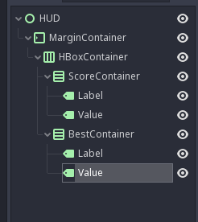
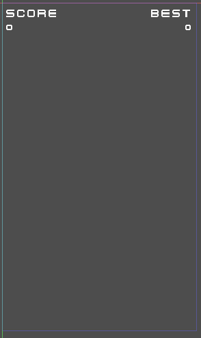
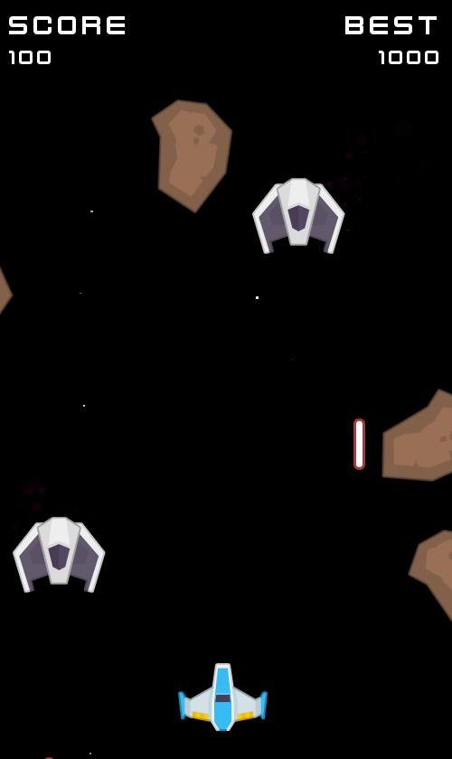

Un HUD pour le score
Plus simple que la partie précédente, on va mettre en place un petit HUD pour montrer le score actuel.
Préparation
On va faire une nouvelle scène (Scene -> New Scene) et on part de User Interface, on renomme le noeud en HUD et on enregistre sous res://ui/HUD.tscn.
On a donc un noeud de type Control, qui permet de réaliser de l'UI.
On va aller vite: on va enchaîner les créations de noeud.
On va avoir besoin de cette arbre là sous le noeud HUD:
- Créer un
MarginContainer,- Il faut définir son
LayoutàFull Rect, - Et changer les
Custom Constantsen mettant20partout, pour avoir un petit margin, - Ajouter un enfant
HBoxContainer,- Dans
Size Flags, décocherVertical -> Fill, - Ajouter un enfant
VBoxContainer(à renommerScoreContainer),- Dans
Size Flags, cocherHorizontal -> Expand(en plus deFill), - Ajouter un enfant
Label,- Taper
SCOREdansText, - Définir une
FontdansCustom Fontsen choisissantNew Dynamic Font- Puis dans
Fontchargerres://assets/fonts/kenvector_future.ttf, - Et changer
Settings -> Sizeà32,
- Puis dans
- Taper
- Ajouter un enfant
Label(à renommerScore),- Taper
0dansText, - Définir une
FontdansCustom Fontsen choisissantNew Dynamic Font- Puis dans
Fontchargerres://assets/fonts/kenvector_future.ttf, - Et changer
Settings -> Sizeà24,
- Puis dans
- Taper
- Dans
- Ajouter un enfant
VBoxContainer(à renommerBestContainer),- Dans
Size Flags, cocherHorizontal -> Expand(en plus deFill), - Ajouter un enfant
Label,- Taper
BESTdansText, - Changer
AlignpourRight, - Définir une
FontdansCustom Fontsen choisissantNew Dynamic Font- Puis dans
Fontchargerres://assets/fonts/kenvector_future.ttf, - Et changer
Settings -> Sizeà32,
- Puis dans
- Taper
- Ajouter un enfant
Label(à renommerScore),- Taper
0dansText, - Changer
AlignpourRight, - Définir une
FontdansCustom Fontsen choisissantNew Dynamic Font- Puis dans
Fontchargerres://assets/fonts/kenvector_future.ttf, - Et changer
Settings -> Sizeà24,
- Puis dans
- Taper
- Dans
- Dans
- Il faut définir son
Une fois que c'est fait, on devrait avoir ça:


Intégration dans le jeu
Dans la scène GameScreen, ajoutez un noeud de type CanvasLayer tout en bas de l'arbre, puis ajoutez la scène HUD en enfant.
Il faut maintenant brancher le HUD dans le script de GameScreen.
- Il faut ajouter deux références vers les labels du HUD sous les lignes
onready:
onready var hud_score = $CanvasLayer/HUD/MarginContainer/HBoxContainer/ScoreContainer/Value
onready var hud_best = $CanvasLayer/HUD/MarginContainer/HBoxContainer/BestContainer/Value
- Définir une fonction
_update_hudsous_add_score:
func _update_hud():
self.hud_score.text = str(self.score)
self.hud_best.text = str(self.best_score)
- Mettre à jour
_add_scoreet ajouter à la fin:
self._update_hud()
- Puis mettre à jour
_on_player_deadpour ajouter à la fin:
self._update_hud()
Faites Play Scene, et hop, le HUD devrait fonctionner.
